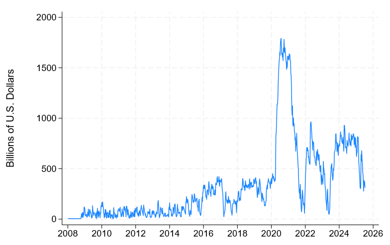

FEDS Notes
August 06, 2025
Fluctuations in the Treasury General Account and their effect on the Fed's balance sheet
The Treasury General Account (TGA) represents the US government's deposits held with the Federal Reserve. The TGA is used to facilitate payments from and to the government and thus provides important payment services to the government and the country. As illustrated in Figure 1, TGA balances have been volatile in recent years, with large declines during periods with a binding debt ceiling and large increases after the increase in the debt ceiling.

Source: FRED, series WDTGAL. Weekly data as of Wednesday
a. Possible approaches to address TGA fluctuations
Consider a simplified version of the Fed's balance sheet:
| Assets | Liabilities |
|---|---|
| Securities (Treasuries, agency MBS) | Currency |
| Lending (discount window, SRF etc.) | Treasury General Account (government deposits) |
| Reserves | |
| ON RRP balances |
When the TGA fluctuates, something else must adjust on the Fed's balance sheet for it to balance. The Fed supplies currency in the amount demanded by households and firms so letting currency adjust in not an option. That leaves four variables that may adjust to TGA fluctuations: Reserves, ON RRP balances, securities or lending. Below I summarize four approaches to address TGA fluctuations corresponding to each of these four variables adjusting.1
1. Ample reserves: Reserves adjust to TGA fluctuations, in the opposite direction of the TGA
If reserve supply is (on average) large, then letting reserves fluctuate in response to TGA fluctuations will not generate much interest rate volatility because banks operate on a fairly flat part of their reserve demand curve. I will refer to this approach to managing the effects of TGA fluctuations as an "ample reserves" approach. Since the global financial crisis, the Fed has mostly followed this approach given the ample or abundant reserve supply resulting from QE. An ample reserve supply has the benefit of limiting the interest rate effects of TGA fluctuations.
2. Active ON RRP borrowing: Fed borrowing from financial institutions via the ON RRP facility adjusts to TGA fluctuations, in the opposite direction of the TGA
This approach is relevant when ON RRP take-up is positive in which case fluctuations in ON RRP balances can serve as a buffer that insulates reserves from TGA fluctuations, thereby limiting interest volatility.
3. Active securities: Securities are adjusted to TGA fluctuations, in the same direction as the TGA
Another option is to adjust Fed securities holdings in the same direction as the TGA and keep other Fed liabilities unaffected. I will call this an "active securities" approach. To prevent TGA fluctuations from leading to interest rate volatility, an active securities approach could proactively adjust Fed securities holdings via changes to asset purchases or asset runoff pace or it could reactively adjust Fed securities holdings via traditional open market operations when reserve scarcity emerges.
4. Active lending: Fed lending to the financial sector adjusts to TGA fluctuations, in the same direction as the TGA
When lending is positive, fluctuations in lending can serve as a buffer that insulates reserves from TGA fluctuations. In this approach, TGA fluctuations would be met by changes in the Fed's lending to financial institutions via its various lending facilities (the Standing Repo Facility, discount window, or FIMA repo facility).
Since the Global Financial Crisis, the Fed has used a combination of the first three approaches. With large securities holdings driven by its QE programs, reserve supply has generally been ample, thus allowing the Fed to let reserves adjust to TGA fluctuations without this generating substantial interest rate volatility. The Committee has announced its desire to keep reserves ample.2 In periods with large ON RRP take-up, the ON RRP has served as a shock absorber, again limiting interest rate volatility. As for the active securities approach, this was used reactively in mid-September 2019 when an increase in the TGA (occurring after a period of balance sheet runoff), among other factors, led to reserve scarcity and repo market disruptions until it was addressed by open market operations. Since Fed lending tends to be modest, an active lending approach has not been used at the Fed, but the Bank of England has recently implemented this approach.
When comparing approaches, the following design principles may be considered relevant.
Interest rate control: It is desirable to avoid reserve scarcity which could be associated with interest rate volatility.
Control of the Committee's overall policy stance: In addition to short market rates, the Committee's policy stance is affected by the amount of stimulus or restraint imparted by its asset holdings (QE, QT). It is desirable to avoid an effect of TGA fluctuations on the policy stance.
Communication: The Committee may not want to be perceived as changing its policy stance (short rates or longer rates) in response to fluctuations in the TGA. This could be perceived by the public as fiscal policy affecting monetary policy, even if the effect is of a somewhat technical nature.
As the Fed shrinks its balance sheet as part of quantitative tightening, reserves are becoming less ample and ON RRP balances are now modest. Unless the Fed follows the Bank of England's active lending approach, the Fed's need to use active assets approaches to manage TGA fluctuations is likely to increase. The decision at the March 2025 FOMC meeting to continue balance sheet runoff at a slower pace reduces the risk of reserve scarcity emerging during a potential rapid increase in the TGA. It thus has an element of the active securities approach with proactive adjustment of assets. Proactive or reactive approaches to adjust assets score well on the first design principle of retaining interest rate control. However, when the assets adjusted have substantial duration or prepayment risk, these approaches do less well on the second design principle since changes to assets will affect the Committee's overall policy stance. As for the third design principle, it may be difficult to communicate that adjusting the Fed's assets in expectation of or in response to fluctuations in the TGA is a technical issue rather than an effect of fiscal policy on monetary policy.
b. A new angle on the active securities approach: Back the TGA with bills and adjust reactively
The effect of the Fed's balance sheet on its policy stance is typically thought of as working via the Fed holding assets with some duration or pre-payment risk and thereby affecting prices of assets carrying such risks. This suggests a simple approach to adjusting assets without changing the policy stance: Back the TGA with short-maturity securities (Treasury bills) and adjust these securities with fluctuations in the TGA. In the above taxonomy, this is an example of an active securities approach of the reactive type. T-bill holdings would be reduced when the TGA fell. This could be done by simply letting T-bills roll off, or via outright T-bill sales. Conversely, T-bill holdings would be increased when the TGA increased. This approach is effectively TGA "segregation" in the sense that part of the Fed's balance sheet would effectively be separated into a very simple part which has only Treasury bills on the asset side and the TGA on the liability side. With TGA segregation, fluctuations in the TGA would be met with adjustments to the Fed's Treasury bill holdings.
The approach of backing the TGA with T-bills scores well on all three design principles.
First, short rates would be unaffected by TGA fluctuations since reserves would be unaffected. This represents an improvement relative to an ample reserves approach by preventing Treasury bill scarcity during periods of low TGA balances. Because of the Treasury's desire to follow a regular and predictable approach to Treasury note and bond issuance, debt ceiling events have at times been associated with lower Treasury bill supply and therefore with downward pressure on money market rates (a lack of interest rate control in the downward direction). Second, with the TGA backed with bills, the Fed's holdings of longer-maturity assets would be unaffected by TGA fluctuations. This would insulate the Fed's overall policy stance from the TGA. Third, backing the TGA with T-bills should be easy to communicate. It is a straightforward way to provide banking services to the government while keeping one Fed job (being the government's bank) separate from another Fed job (monetary policy). Historically, the Fed has always accommodated trends in autonomous factor (i.e., currency or TGA) demand by increasing its assets, growing assets in line with demand trends. Backing the TGA with bills and adjusting bill holdings reactively would simply extend the historical approach to also address fluctuations in the government's banking needs. Furthermore, the change would have no effect on the TGA. The government would have the same ability to increase or decrease TGA balances as previously.
c. Implementation
T-bill management: From a practical perspective, with a T-bills approach to TGA management, it would need to be decided how much the TGA should be allowed to change before changes to T-bill holdings were made. As long as substantial reserve scarcity is not desired, day-to-day management of the TGA would not be needed. Weekly or monthly changes to the Fed's T-bill holdings would likely be sufficient to prevent any material effects of TGA fluctuations on short rates. The Fed could design its T-bill portfolio with staggered maturities to allow some gradual T-bill reductions without outright sales, but some active buying and selling would likely be needed. Changes in Fed T-bill holdings in response to TGA fluctuations would tend to be stabilizing (rather than disruptive) as they would help stabilize the T-bill supply available to non-Fed investors during debt ceiling episodes.
The Fed currently holds around $200B in T-bills. The TGA has averaged around $800B in recent years outside debt ceiling episodes (Figure 1 above). A transition to TGA management via T-bills would suggest an increase in the Fed's T-bill holdings of about $600B, with a corresponding decrease in the Fed's demand for notes/bonds. The Fed could roll maturing notes/bonds into T-bills for a period of time (1-2 years). If the Treasury adjusted its issuance of T-bills and notes/bonds accordingly, yields would be unaffected.
Effect on the consolidated government's budget: From the perspective of the consolidated government (the Treasury and the Fed), the Fed's choice of which Treasury maturities to hold to back the TGA has no effect. The Treasury pays the Fed interest on the Fed's Treasury holdings, but the Fed rebates its profits to the Treasury. As a practical example, if the yield curve on average slopes up, then the Fed's profits will tend to be lower with more T-bill holdings and fewer holdings of notes/bonds. However, if the Treasury shortens the overall outstanding amounts in response to changed Fed demand (so T-bills outstanding go up and Treasury notes/bonds decrease), then the Treasury will tend to have lower interest costs. Accounting for both the Treasury's lower interest cost and the lower profits received from the Fed, the overall impact on government finances of a change to manage the TGA via T-bill holdings would be zero.
1. A graphical illustration of the four approaches is provided in Lopez-Salido, D. and A. Vissing-Jorgensen, 2025, "Reserve Demand, Interest Rate Control, and Quantitative Tightening", working paper. Return to text
2. See Federal Reserve Board - Plans for Reducing the Size of the Federal Reserve's Balance Sheet. Return to text
Vissing-Jorgensen, Annette (2025). "Fluctuations in the Treasury General Account and their effect on the Fed's balance sheet," FEDS Notes. Washington: Board of Governors of the Federal Reserve System, August 06, 2025, https://doi.org/10.17016/2380-7172.3873.
Disclaimer: FEDS Notes are articles in which Board staff offer their own views and present analysis on a range of topics in economics and finance. These articles are shorter and less technically oriented than FEDS Working Papers and IFDP papers.